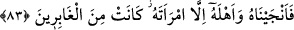
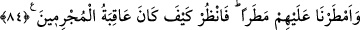

verdikleri ifade edilmemektedir. Lût (a.s.) kıssasının geçtiği diğer sûrelerde de
belirtildiği üzere Lût kavmi, peygamberleri ile aralarında geçen konuşmalarda daha
başka saçma sözler de söylemişlerdir. Buradaki kötü sözü ise Lût ile olan en son
konuşmalarında dile getirmişlerdir.
83. Biz de onu ve karısından başka aile efradını kurtardık; çünkü karısı geride
kalanlardan (kâfirlerden) idi.
“Biz de onu” Lût’u “ve ailesini” kızları Reûzâ ve Rîsâ ile ona iman eden diğerlerini
“kurtardık.”
Aile, hanımlar, çocuklar, köle ve cariyeler, akrabalar ve arkadaşlar olarak tefsir
edilir. Bir kimsenin ehli, kendisine nisbet olunan yakın kimselerdir.
“Yalnız karısı geride kalanlardan oldu.” Hanımı da Lût (a.s.)’ın ailesindendi. Ama o
küfrünü gizlediği ve diğer kâfirleri Lût (a.s.)’ı inkara teşvik ettiği için kurtulanlardan
olamadı. Helâk olmak üzere beldelerde kalanlarla kaldı.
“Ğabirîn” (geri kalanlar), müzekker bir kelimedir. Halbuki Lût (a.s.)’ın hanımından
bahsederken “ğâbirât” şeklinde müennes olması lazım gelirdi. Sodom diyarında helâk
olmak üzere kadın ve erkek pek çok kimse kaldı. Fakat erkekler dikkate alınarak hepsi
hakkında müzekker bir kelime kullanılmıştır.
84. Ve üzerlerine (taş) yağmuru yağdırdık. Bak ki günahkârların sonu nasıl oldu!
“Ve” Lut kavminin kâfirleri “üzerlerine bir” tür taş “yağmuru yağdırdık.” Yani
yağmur gibi taş yağdırdık.
“Bak” Bu hitab, düşünen herkesedir. Bakmak, onların durumundan ibret almak ve
yaptıklarından sakınmak içindir. “işte suçluların sonu nasıl oldu.” Yani, kâfîrlerin ve
yalanlayanların sonunu, onlara nasıl muamelede bulunduğumuzu düşün.
Lût kavminin bu çirkin işi, yani livatayı yapmasının sebebinin şu olduğu söylenmiştir:
Bu insanların oturdukları Şam bölgesinde çeşit çeşit meyve ve hububat bolca yetişirdi.
Çevreden birçok insan sadaka istemek amacıyla onlara yöneldi. Fakir fukaranın çokça
gelip gitmesinden rahatsız oldular. İblis bir ihtiyar suretinde gelerek onlara; ‘Eğer şöyle
şöyle yaparsanız bunlardan kurtulursunuz.’ diye akıl verdi. Kabul etmediler. İnsanlar
gelip gitmekte ısrar edince onlara saldırıp yakışıklı ve güzel oğlanlarını yakalayarak bu
kötü işi yaptılar. Daha sonra bu onlarda yerleşip âdet haline geldi. Onlar evlenmeyi
bıraktılar. Sadece garib ve fakirler evleniyordu.